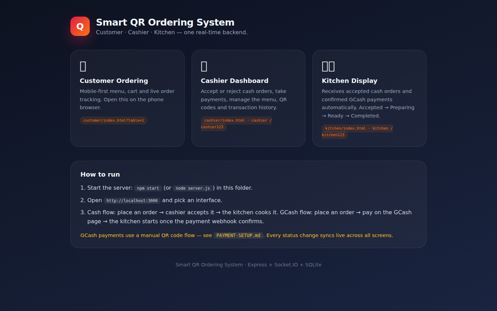

SmartQR Ordering
Customers scan a table QR code to browse a menu and place an order. Cashier and kitchen views follow the same order through payment and preparation, with live status updates across all three interfaces.
Thesis project · Sole developer
Inside the project
- My role
- Sole developer. I built the system independently for my thesis, including the customer, cashier, and kitchen interfaces.
- The problem
- Keeping customers, cashiers, and kitchen staff informed as an order moves between them.
- The workflow
- Table QR code → menu and cart → checkout → cashier and kitchen tracking.
- The technical focus
- Node.js and Express support the application, Socket.IO provides live updates, and SQLite stores data.